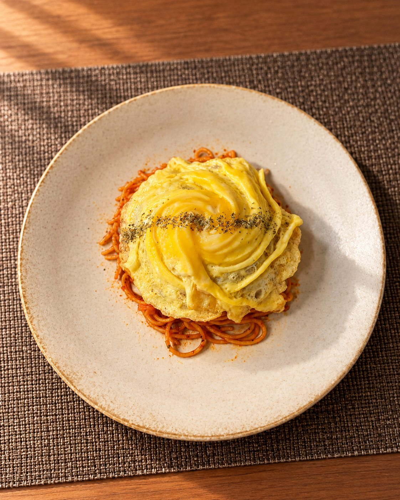
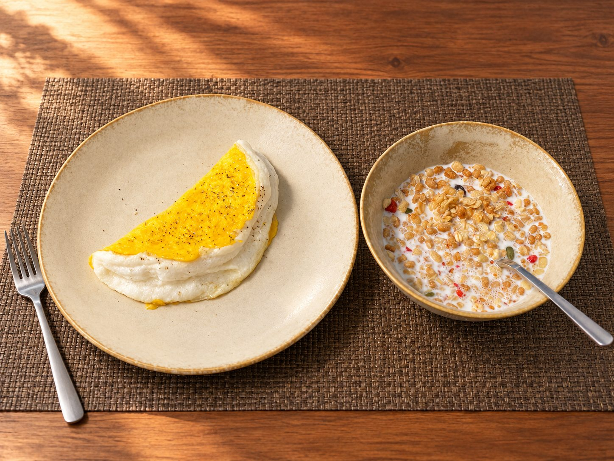

CORE COMPETENCY
Software
Development
Useful applications. Real problems. Ideas made to work.
A little introduction
Hello, I'm Joel.
Software developer.
Machine Learning & AI.
Game designer.
From Ghana. Currently a master's student at KIC.
See something I've made02 / THE PRACTICE
I'm Joel Assiakwa. I turn ideas into things you can use, play, and experience.
Software Development and Machine Learning & AI are my core competencies.
CORE COMPETENCY
Useful applications. Real problems. Ideas made to work.
CORE COMPETENCY
Trained models that recognize patterns and turn them into useful actions.
CREATIVE PRACTICE
Controls that feel natural. Visual stories. A reason to keep playing.
Also exploring visual storytelling, anime, visual novels, and new tools.
03 / SELECTED WORK
AI MEETS PLAYHEADWIND / A BROWSER GAME
Your webcam becomes the controller. A trained AI model reads your head position and guides a little bird between the pipes.
Play Headwind View the code ↗
No camera? W / ↑ moves up. S / ↓ moves down.
A Teachable Machine pose model recognizes up, straight, and down. TensorFlow.js runs the model in your browser; p5.js draws the game. Camera images stay in your browser.
04 / BEYOND THE SCREEN
I try to learn a new skill every few months. Cooking is the latest. I'm also learning Japanese.
KITCHEN NOTES / COOKED BY JOEL
To the travel journal ↓A different kind of making.
One dish at a time.
Scroll to browse

Cooked by Joel · Photo refined with AI

Cooked by Joel · Photo refined with AI
Cooked by Joel · Photo refined with AI
Homemade food. A little trial, a little discovery.
05 / PLACES & PERSPECTIVES
旅の記録Where my story begins.
The world keeps it growing.
COUNTRIES I'VE VISITED
A few places I've visited in Kobe.
Dubai
Look straight to get ready.
Face the camera in good light. Look straight to stop. Mouse, keyboard, and touch still work.